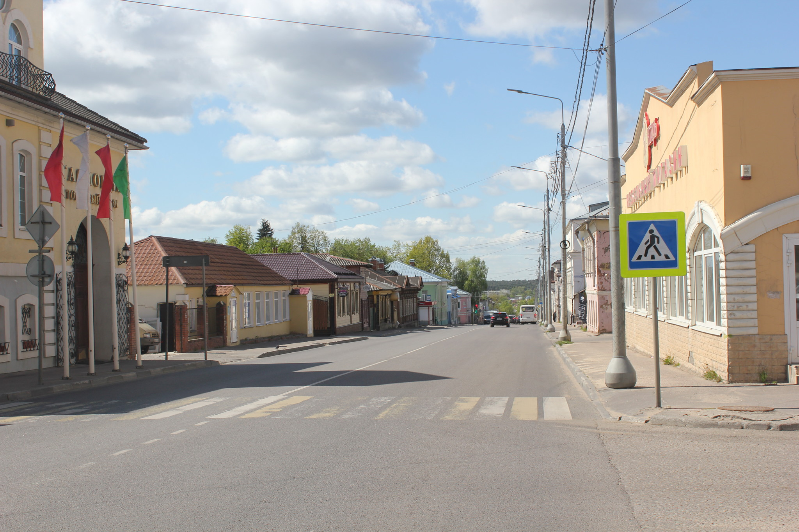
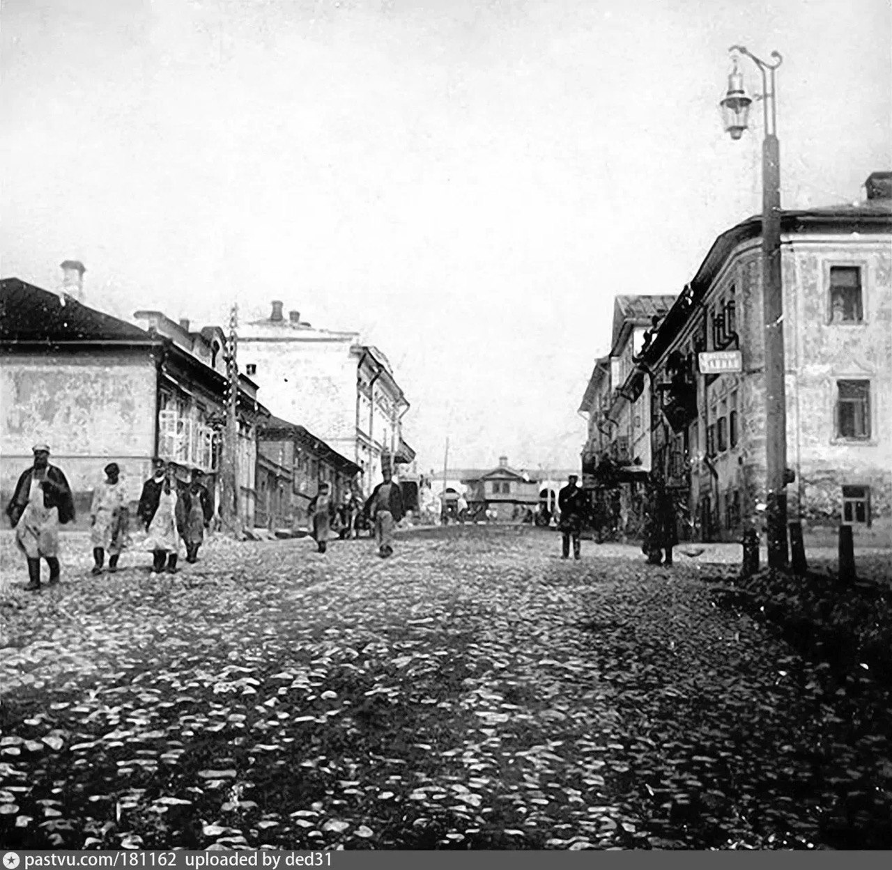

ЦИФРОВОЙ АРХИВ
АРХИВ И БИБЛИОТЕКА
Исследуйте богатую коллекцию исторических документов, фотографий и воспоминаний, хранящих память о Серпухове. Наш архив содержит более 10 000 оцифрованных материалов.

 Фотография
Фотография
Начало XX века
Панорама города с высоты птичьего полета
Документ
1920-е годы
Архитектурные особенности старого Серпухова

Воспоминания1950-е годы
Рассказы старожилов о послевоенном Серпухове
Фотография
1930-е годы
Городские праздники и народные гуляния
Документ
1940-е годы
Промышленное развитие в военные годы
Видео
1960-е годы
Культурная жизнь в доме культуры
Фотография
1970-е годы
Школьные годы в Серпухове
Документ
1980-е годы
Развитие транспортной системы
...